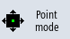
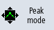
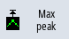
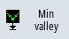

You have the option of directly determining the following values of a curve:
-
Peak-to-peak value
-
Peak-to-valley value
Procedure
 | | A recording is opened in the "Trace" graphics window. |
|  | | Press the "Point Mode" softkey to continuously move the cursor along the curve. |
|  | | Press the "Peak Mode" softkey to position the cursor at the highest value. |
| | | Press the "Valley Mode" softkey to position the cursor at the lowest value. |
|  | | If you press the "Peaks" softkey, the cursor only goes to the peak-peak values. |
|  | | If you press the "Minimum" softkey, the cursor only goes to the peak-valley values. |